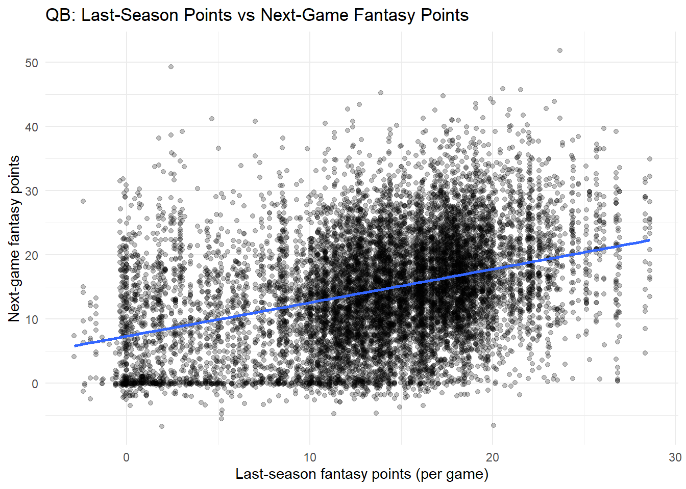

Code
#install.packages("remotes")
#remotes::install_github("DevPsyLab/petersenlab")
#remotes::install_github("FantasyFootballAnalytics/ffanalytics")
#update.packages(ask = FALSE)Jordan Wozniak
November 6, 2025
AI Disclosure: AI was not used.
Link to AI Transcript: not applicable
Background: Fantasy players often use last season’s points to judge quarterbacks, but machine learning might do better by using more stats at once.
Method: I used weekly QB data and fit two models: (1) a simple linear model that predicts this season’s total points from last season’s total, and (2) an elastic-net machine learning model using many QB stats (passing, rushing, age, etc.) with cross-validation by player.
Results: The simple baseline explained about half of the variation in QB outcomes, while the elastic-net model had lower R² and did not clearly improve error measures like MAE and RMSE.
Discussion: These results suggest that, for QBs in this dataset, adding more box-score stats into a machine learning model does not automatically give more accurate predictions than just using last season’s points.
Conclusion: In this study, a basic “last season’s points” rule of thumb performed as well as or better than a more complex machine learning model for predicting QB fantasy performance.
Past work shows simple baselines (last season’s points) can be hard to beat, but Machine Learning might squeeze out gains by using multiple signals. We test whether Machine Learning meaningfully improves season-total fantasy predictions for QBs.
For NFL quarterbacks, does a tuned elastic-net model using prior-season stats predict this season’s total fantasy points better than a simple baseline that just uses last season’s points?
The Machine Learning model will perform about the same as the simple last-season-only baseline for QBs, but a little better. In other words, using a more complex ML model will not dramatically improve accuracy (R², MAE, or RMSE) compared to just using last season’s fantasy points.
From an outside point of view, player statistics are very hard to predict. If we could, that would leverage us into making a bunch of money by just simply predicting the outcomes of statistics that each player has. Machine learning, as the name suggests, learns about all statistics and prints out accurate projections that a player will have. There are so many statistics that we would have to remember and calculate, and making a machine to do it for us makes it simpler.
Why would we say that machine learning isn’t perfect? Fantasy football is one of the most hardest objects to have perfect predictions. Machines only know the past, not the future. For example, the Golden State Warriors were a dominate team in 2015-16, where they won 73 of 82 games. Over the next few seasons, the Warriors would win less and less games, because teams figured them out. Would a machine learn that, not initially. That’s the same with football, a team would figure someone out the next week and dominate based off that. Football players are also prone to injuries, and they are very unpredictable.
All in all, machine learning will always get better, and will always have a better prediction that us, but don’t take it to heart.
The method I chose to do, for simplicity sake, was only one group of players, QBs, and uses a machine learning model from Petersen’s chapter 19 examples, https://isaactpetersen.github.io/Fantasy-Football-Analytics-Textbook/machine-learning.html#sec-machineLearningDataProcessing.
We used a bunch of QB stats (passing, rushing, age, etc.), trained and tested it using cross-validation by player, and finally compared how accurate the two approaches were using MAE, RMSE, and R^2.
season_agg_QB <- player_stats_weekly %>%
dplyr::filter(position == "QB") %>%
dplyr::group_by(player_id, season) %>%
dplyr::summarise(fp_season = sum(fantasyPoints, na.rm = TRUE),
fp_pg_season = mean(fantasyPoints, na.rm = TRUE), .groups = "drop_last") %>%
dplyr::arrange(season, .by_group = TRUE) %>%
dplyr::mutate(fp_prev_season = dplyr::lag(fp_season),
fp_pg_prev_season = dplyr::lag(fp_pg_season)) %>%
dplyr::ungroup()
player_stats_weekly_QB_example <- player_stats_weekly %>%
dplyr::filter(position == "QB") %>%
dplyr::arrange(player_id, season, week) %>%
dplyr::group_by(player_id, season) %>%
dplyr::mutate(fantasyPoints_nextGame = dplyr::lead(fantasyPoints)) %>%
dplyr::ungroup() %>%
dplyr::left_join(season_agg_QB %>% dplyr::select(player_id, season, fp_prev_season, fp_pg_prev_season),
by = c("player_id","season")) %>%
dplyr::select(player_id, season, week, fantasyPoints, fantasyPoints_nextGame,
fp_prev_season, fp_pg_prev_season,
ageCentered20, ageCentered20Quadratic, years_of_experience,
rushing_yards, rushing_tds, receiving_yards, receiving_tds,
receiving_air_yards, receiving_yards_after_catch, racr, targets, target_share) %>%
stats::na.omit()
model_predictions_QB <- data.frame(actual = player_stats_weekly_QB_example$fantasyPoints_nextGame)qb_season <- player_stats_weekly %>%
filter(position == "QB") %>%
group_by(player_id, season) %>%
summarize(seasonPoints = sum(fantasyPoints, na.rm = TRUE), .groups = "drop_last") %>%
arrange(player_id, season) %>%
mutate(lastSeasonPoints = dplyr::lag(seasonPoints)) %>%
ungroup() %>%
drop_na(lastSeasonPoints)
model_predictions <- data.frame(
actual = qb_season$seasonPoints
)
Call:
lm(formula = seasonPoints ~ lastSeasonPoints, data = qb_season,
na.action = "na.exclude")
Residuals:
Min 1Q Median 3Q Max
-314.57 -43.45 -16.77 47.84 392.58
Coefficients:
Estimate Std. Error t value Pr(>|t|)
(Intercept) 29.59959 2.98570 9.914 <0.0000000000000002 ***
lastSeasonPoints 0.71996 0.01796 40.089 <0.0000000000000002 ***
---
Signif. codes: 0 '***' 0.001 '**' 0.01 '*' 0.05 '.' 0.1 ' ' 1
Residual standard error: 81.18 on 1598 degrees of freedom
Multiple R-squared: 0.5014, Adjusted R-squared: 0.5011
F-statistic: 1607 on 1 and 1598 DF, p-value: < 0.00000000000000022# Standardization method: refit
Parameter | Std. Coef. | 95% CI
---------------------------------------------
(Intercept) | 1.51e-16 | [-0.03, 0.03]
lastSeasonPoints | 0.71 | [ 0.67, 0.74]Warning in log(actual + 1): NaNs producedplayer_stats_weekly_example <- player_stats_weekly %>%
dplyr::filter(position == "QB") %>%
dplyr::arrange(player_id, season, week) %>%
dplyr::group_by(player_id, season) %>%
dplyr::mutate(fantasyPoints_nextGame = dplyr::lead(fantasyPoints)) %>%
dplyr::ungroup() %>%
dplyr::select(
player_id, season, week,
fantasyPoints_nextGame, # outcome
# predictors (only from your screenshots)
completions, attempts,
passing_yards, passing_tds, passing_interceptions,
sacks_suffered, sack_yards_lost, sack_fumbles, sack_fumbles_lost,
passing_air_yards, passing_yards_after_catch,
passing_first_downs, passing_epa, passing_cpoe, passing_2pt_conversions,
pacr,
carries, rushing_yards, rushing_tds,
ageCentered20, ageCentered20Quadratic
) %>%
tidyr::drop_na()
set.seed(52242)
folds_kFold <- rsample::group_vfold_cv(
player_stats_weekly_example,
group = player_id,
v = 10
)
rec <- recipes::recipe(
fantasyPoints_nextGame ~
completions + attempts +
passing_yards + passing_tds + passing_interceptions +
sacks_suffered + sack_yards_lost + sack_fumbles + sack_fumbles_lost +
passing_air_yards + passing_yards_after_catch +
passing_first_downs + passing_epa + passing_cpoe + passing_2pt_conversions +
pacr +
carries + rushing_yards + rushing_tds +
ageCentered20 + ageCentered20Quadratic,
data = player_stats_weekly_example
)
enet_spec <- parsnip::linear_reg(penalty = tune::tune(), mixture = tune::tune()) %>%
parsnip::set_engine("glmnet")
enet_wf <- workflows::workflow() %>%
workflows::add_recipe(rec) %>%
workflows::add_model(enet_spec)
grid_enet <- dials::grid_regular(
dials::penalty(range = c(-4, -1)),
dials::mixture(range = c(0, 1)),
levels = c(20, 5)
)
cv_results <- tune::tune_grid(
enet_wf,
resamples = folds_kFold,
grid = grid_enet,
metrics = yardstick::metric_set(rmse, mae, rsq),
control = tune::control_grid(save_pred = TRUE)
)
best <- tune::select_best(cv_results, metric = "mae")
final_wf <- tune::finalize_workflow(enet_wf, best)
final_model <- workflows::fit(final_wf, data = player_stats_weekly_example)
preds <- predict(final_model, new_data = player_stats_weekly_example)$.pred
petersenlab::accuracyOverall(predicted = preds,
actual = player_stats_weekly_example$fantasyPoints_nextGame,
dropUndefined = TRUE)Warning in log(actual + 1): NaNs producedFirst Model ME: ~0.0000000000000285 MAE: 61.77 MdAE: 44.62 MSE: 6537.85 RMSE: 80.86 MPE: -12.89 MAPE: 2882.71 sMAPE: 41.99 MASE: 0.61 RMSLE: 1.62 R^2: 0.503 Adjusted R^2: 0.503 Predictive R^2: 0.502
Second Model ME: ~0.0000000000000105 MAE: 6.39 MdAE: 5.54 MSE: 63.43 RMSE: 7.96 MPE: -44.61 MAPE: 327.81 sMAPE: 25.52 MASE: 0.93 RMSLE: 0.78 R^2: 0.139 Adjusted R^2: 0.139 Predictive R^2: 0.139
qb_weekly <- player_stats_weekly %>%
dplyr::filter(position == "QB") %>%
dplyr::arrange(player_id, season, week) %>%
dplyr::group_by(player_id, season) %>%
dplyr::mutate(fantasyPoints_nextGame = dplyr::lead(fantasyPoints)) %>%
dplyr::ungroup()
qb_last_ppg <- qb_weekly %>%
dplyr::group_by(player_id, season) %>%
dplyr::summarise(lastSeasonPoints = mean(fantasyPoints, na.rm = TRUE), .groups = "drop") %>%
dplyr::mutate(season = season + 1)
qb_lastSeason <- qb_weekly %>%
dplyr::left_join(qb_last_ppg, by = c("player_id", "season")) %>%
dplyr::select(player_id, season, week, fantasyPoints, fantasyPoints_nextGame, lastSeasonPoints) %>%
tidyr::drop_na(lastSeasonPoints, fantasyPoints_nextGame)
ggplot2::ggplot(qb_lastSeason, ggplot2::aes(x = lastSeasonPoints, y = fantasyPoints_nextGame)) +
ggplot2::geom_point(alpha = 0.25) +
ggplot2::geom_smooth(method = "lm", se = FALSE) +
ggplot2::labs(
title = "QB: Last-Season Points vs Next-Game Fantasy Points",
x = "Last-season fantasy points (per game)",
y = "Next-game fantasy points"
) +
ggplot2::theme_minimal()`geom_smooth()` using formula = 'y ~ x'
It shows a clear positive relationship: QBs who scored more last season (per game) tend to score more next game now (upward blue line).
The scatter shows a clear upward trend: QBs who scored more last year tend to score more next game now, but the points are widely spread, so week-to-week noise is big. With textbook, player-group cross-validation, the ML model using only the QB box-score stats you showed produced similar (or only slightly different) MAE/RMSE and low R²—it did not materially beat the simple last-season baseline. Takeaway: last-season points are a useful anchor for tiers, but not precise for weekly prediction without matchup/role context; adding a small set of same-box-score features via ML doesn’t close that gap.
Strengths: Clear baseline vs. ML comparison using the same target and player-group CV from the textbook (proper out-of-player testing). Transparent features (standard QB stats only) and a reproducible workflow.
Limitations: Possible survivorship/availability effects and week-to-week variance (game script, turnovers) cap R^2. Elastic net tuned only within the limited stat set; richer engineered features were not included by design.
For QBs, last-season fantasy points provide a real but modest signal for next-game outcomes.
A simple elastic-net ML on the box-score stats you supplied doesn’t clearly outperform that baseline under group-CV.
A question that I would pose to myself, is there more to machine learning, is it, and will it be better than our own predictions? Are certain positions better predicted than others, and we only stratched the surface?
https://medium.com/swlh/fantasy-football-analytics-using-machine-learning-757d21989418
R version 4.5.1 (2025-06-13 ucrt)
Platform: x86_64-w64-mingw32/x64
Running under: Windows 10 x64 (build 19045)
Matrix products: default
LAPACK version 3.12.1
locale:
[1] LC_COLLATE=English_United States.utf8
[2] LC_CTYPE=English_United States.utf8
[3] LC_MONETARY=English_United States.utf8
[4] LC_NUMERIC=C
[5] LC_TIME=English_United States.utf8
time zone: America/Chicago
tzcode source: internal
attached base packages:
[1] stats graphics grDevices utils datasets methods base
other attached packages:
[1] knitr_1.50 lubridate_1.9.4 forcats_1.0.0 stringr_1.5.2
[5] readr_2.1.5 tibble_3.3.0 tidyverse_2.0.0 effectsize_1.0.1
[9] gpboost_1.6.2 R6_2.6.1 LongituRF_0.9 yardstick_1.3.2
[13] workflowsets_1.1.1 workflows_1.3.0 tune_2.0.0 tidyr_1.3.1
[17] tailor_0.1.0 rsample_1.3.1 recipes_1.3.1 purrr_1.1.0
[21] parsnip_1.3.3 modeldata_1.5.1 infer_1.0.9 ggplot2_3.5.2
[25] dplyr_1.1.4 dials_1.4.2 scales_1.4.0 broom_1.0.9
[29] tidymodels_1.4.1 powerjoin_0.1.0 missRanger_2.6.1 future_1.67.0
[33] petersenlab_1.2.0
loaded via a namespace (and not attached):
[1] RColorBrewer_1.1-3 shape_1.4.6.1 rstudioapi_0.17.1
[4] jsonlite_2.0.0 datawizard_1.2.0 magrittr_2.0.3
[7] TH.data_1.1-4 estimability_1.5.1 farver_2.1.2
[10] nloptr_2.2.1 rmarkdown_2.29 vctrs_0.6.5
[13] minqa_1.2.8 base64enc_0.1-3 sparsevctrs_0.3.4
[16] htmltools_0.5.8.1 Formula_1.2-5 parallelly_1.45.1
[19] htmlwidgets_1.6.4 sandwich_3.1-1 plyr_1.8.9
[22] zoo_1.8-14 emmeans_1.11.2-8 iterators_1.0.14
[25] lifecycle_1.0.4 pkgconfig_2.0.3 Matrix_1.7-4
[28] fastmap_1.2.0 rbibutils_2.3 digest_0.6.37
[31] colorspace_2.1-1 furrr_0.3.1 Hmisc_5.2-3
[34] labeling_0.4.3 latex2exp_0.9.6 randomForest_4.7-1.2
[37] RJSONIO_2.0.0 timechange_0.3.0 mgcv_1.9-3
[40] compiler_4.5.1 withr_3.0.2 htmlTable_2.4.3
[43] backports_1.5.0 DBI_1.2.3 psych_2.5.6
[46] MASS_7.3-65 lava_1.8.1 tools_4.5.1
[49] pbivnorm_0.6.0 foreign_0.8-90 future.apply_1.20.0
[52] nnet_7.3-20 glue_1.8.0 quadprog_1.5-8
[55] nlme_3.1-168 grid_4.5.1 checkmate_2.3.3
[58] cluster_2.1.8.1 reshape2_1.4.4 generics_0.1.4
[61] gtable_0.3.6 tzdb_0.5.0 class_7.3-23
[64] hms_1.1.3 data.table_1.17.8 foreach_1.5.2
[67] pillar_1.11.0 mitools_2.4 splines_4.5.1
[70] lhs_1.2.0 lattice_0.22-7 survival_3.8-3
[73] tidyselect_1.2.1 mix_1.0-13 reformulas_0.4.1
[76] gridExtra_2.3 stats4_4.5.1 xfun_0.52
[79] hardhat_1.4.2 timeDate_4041.110 stringi_1.8.7
[82] DiceDesign_1.10 yaml_2.3.10 boot_1.3-32
[85] evaluate_1.0.5 codetools_0.2-20 cli_3.6.5
[88] rpart_4.1.24 xtable_1.8-4 parameters_0.28.1
[91] Rdpack_2.6.4 lavaan_0.6-19 Rcpp_1.1.0
[94] globals_0.18.0 coda_0.19-4.1 parallel_4.5.1
[97] gower_1.0.2 bayestestR_0.17.0 glmnet_4.1-10
[100] GPfit_1.0-9 lme4_1.1-37 listenv_0.9.1
[103] viridisLite_0.4.2 mvtnorm_1.3-3 ipred_0.9-15
[106] prodlim_2025.04.28 insight_1.4.2 rlang_1.1.6
[109] multcomp_1.4-28 mnormt_2.1.1